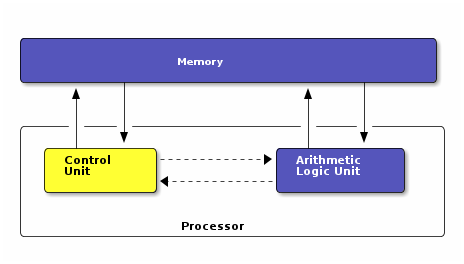
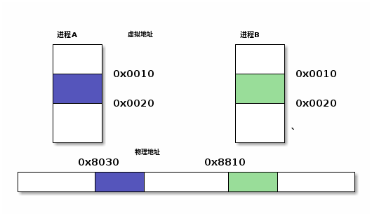
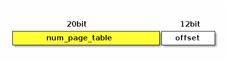
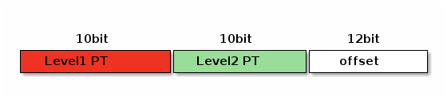

内存基础知识
Table of Contents
1 内存作用
为什么要使用内存，依据冯诺依曼结构，计算机机一般以如下结构组成

可以看到，存储器在计算机运行时，存储了控制器运行时的指令，也存储了运算器的操作数等，是整个体系中核心的一部分。
一般情况下，存储单元会独立在处理器外部，可以根据实际使用场景配置，但也有为了降成本将CPU和DDR合封在一起。
基于上述结构，CPU怎么访问物理地址呢，直接使用物理地址会有什么问题？ 假设程序A在执行时，要使用一片20MB大小的内存，程序B要使用30MB大小的内存，如果直接使用物理地址，有以下几个问题需要解决
- 在写程序A和B时，内存地址的指针应该怎么给定，在不同机器，或不同上下文环境中，可用的物理地址空间是不一样的
- 怎么让程序A和程序B在同时运行时，内存不会互相踩踏
- 如果内存单元中，分不出来一片完整的20MB的内存，但有好多5MB为单位的分散的内存
2 虚拟地址和页表
由于直接使用物理内存，会有上述问题，所以有了虚拟地址的概念，即每个进程看到的都是全新的0~4GB(32位系统）的地址空间，然后使用硬件或软件维护一个虚拟地址到物理地址的映射，在简化使用的同时，最大化的使用内存。

如上图，两个进程同样的虚拟地址，映射到不同的物理地址上。
通过虚拟地址和物理地址的映射，可以解决1和2两个问题，但是如果物理地址空间上没有一串足够大的连续内存，这时怎么办呢？
为了方便管理，以页的方式来管理内存空间，在虚拟地址和物理地址映射时，最小单位为一页。如果要获取当前系统上的页的大小，可以使用如下方式
getconf PAGESIZE
4096
假如在32位系统上，4GB的虚拟地址空间，如果按4KB页大小去划分的话，需要有4GB/4KB=1M个页，假设存储的索引使用uint32，4bytes，则总共需要4MB的空间来存储页表。

为了减少页表所占用的内存，采用多级页表机制，以二级页表为例，第一级页表覆盖4MB的空间，使用4GB/4MB=1K个页表即可表示。 对于每个一级页表所指向的4MB空间，再划分成N个4KB个二级页表，N=4MB/4KB=1K

一级页表共210个，所以使用uint16就足以存储一级页表的索引，那一级页表所使用空间为1K*2B=2KB，同理二级页表所使用空间为1K*1K*2B=2MB。 但由于二级页表可以按需创建，例如我整个进程只使用了100MB的空间，那完全没必要把整个4GB的二级页表都分配好。这样，一个进程的页表所占空间就减少到2KB，再按需动态往上增加，最多2.002MB